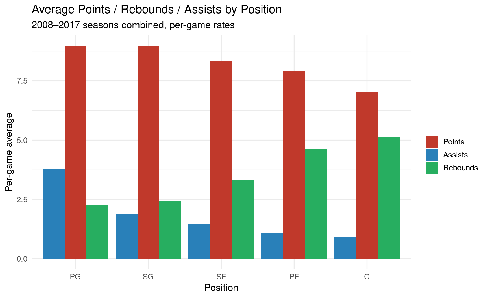
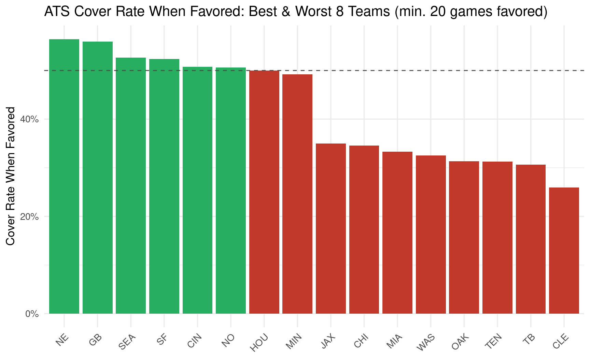
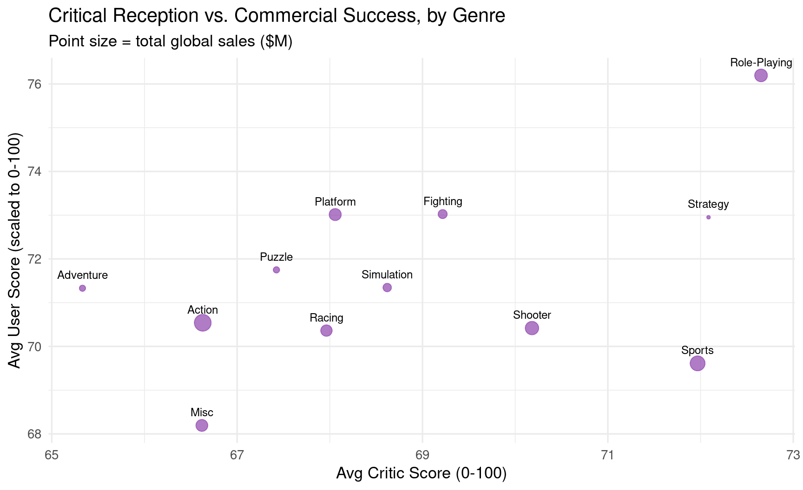
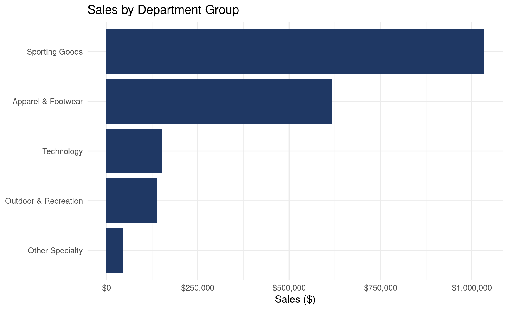
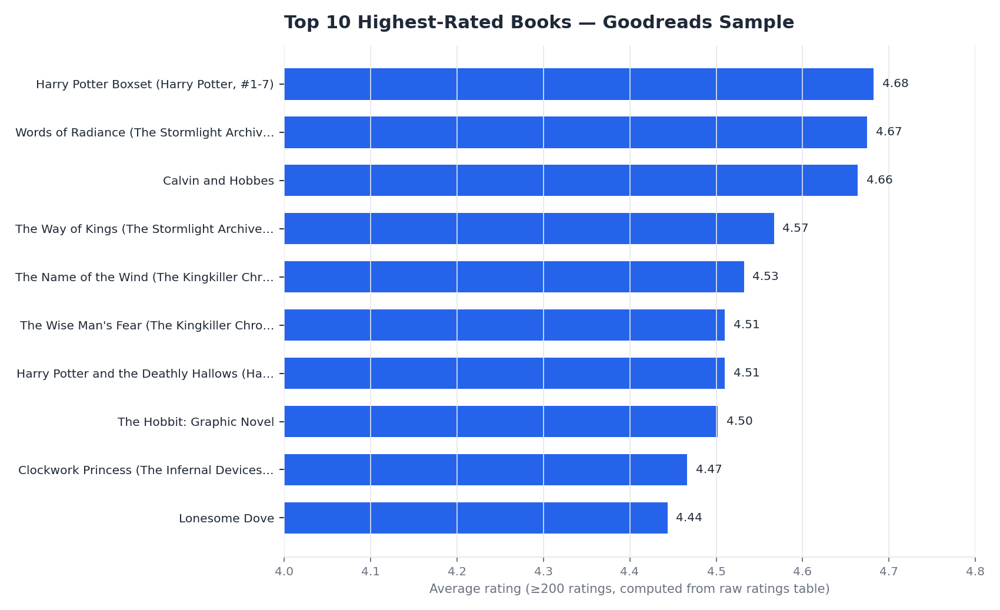
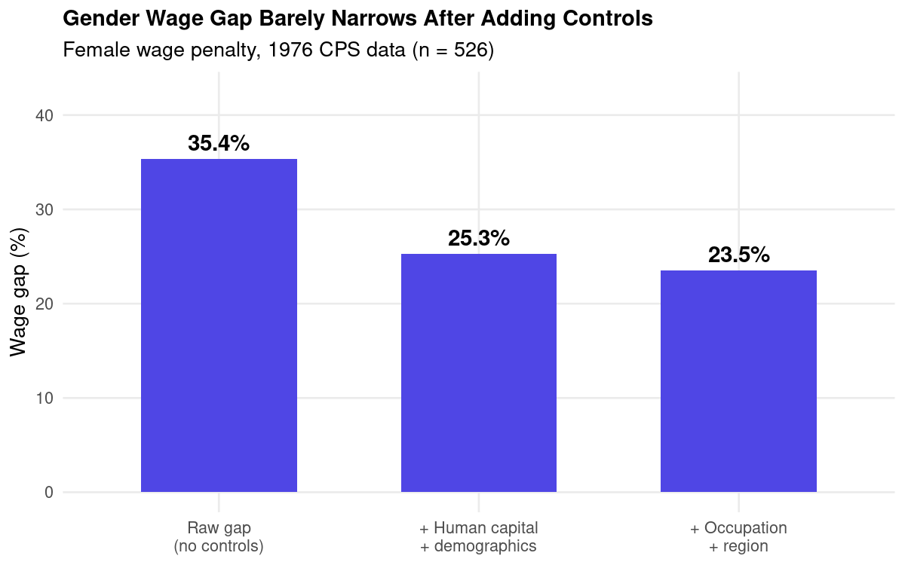

Sai — Data Analyst Portfolio
Seven end-to-end analyses across three tools. Four sports/business datasets, each built twice — once as an Excel workbook (live formulas, pivot tables, charts) and once as an R Markdown report (dplyr + ggplot2) — same datasets, same logic, two tools side by side. Two are SQL projects: real data normalized into relational SQLite databases and queried with joins, CTEs, and window functions. The seventh is an econometrics project — a Mincer wage regression with hand-derived robust standard errors and hypothesis testing.

NBA Stat Projections
Per-game scoring, rebounding, and assist rates by position across 4,669 player-seasons (2008–2017), plus trend lines projecting next-season output for five featured players.
AVERAGEIFS / COUNTIFSFORECAST.LINEARdplyrggplot2

NFL Betting Trends
Against-the-spread and over/under outcomes for 2,136 games (2010–2017), broken out by favorite team and spread size, to see which teams and spreads actually beat the line.
Nested IFCOUNTIFScase_when()dplyr

Video Game Sales
Global sales vs. critic/user reception across 16,717 titles, broken down by genre, platform, publisher, and release year, to see what actually correlates with sales.
SUMIFSPivot Tablesdplyrggplot2

Finance & Supply Chain
Profitability and late-delivery risk across 9,000 order lines, with department-group rollups and a rule-based risk flag (loss-making, late-risk, low-margin, healthy).
MAXIFSMulti-tier IFcase_when()dplyr

Book Ratings Analysis (SQL)
900K real Goodreads ratings across 10,000 books, loaded into a 4-table relational SQLite database. CTEs, window functions, and a manual variance calculation surface the highest-rated, most polarizing, and most divisive books, plus per-user rating bias.
CTEsWindow FunctionsJoinsSQLite

Online Retail Analysis (SQL)
541,909-row UK retailer transaction file, normalized by hand from one flat table into a 4-table relational database. RFM segmentation, running totals, and cohort comparisons find where revenue — and returns — actually come from.
Data NormalizationRFM SegmentationWindow FunctionsSQLite

Wage Regression & the Gender Pay Gap (Econometrics)
Mincer earnings regression on 1976 CPS data (526 workers): three nested OLS models, hand-derived heteroskedasticity-robust (HC1) standard errors, a Breusch-Pagan test, and an honest look at how little the gender wage gap shrinks after controlling for education, experience, tenure, occupation, and region.
OLS RegressionRobust SEsHypothesis TestingR / rmarkdown